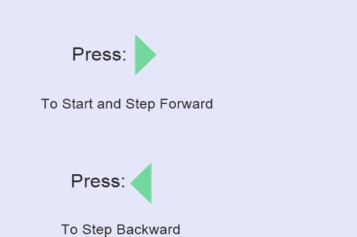

Queue:
A queue is a Linear Data strucure, where items are inserted at one end called the
rear and are deleted at the other end called the front.It is also known as FIFO(First-in,first-out),
Queue is an Abstract Datatype.
It supports two main operations:
enqueue: inserts an element at the rear end of the queue.
dequeue: deletes an element at the front end of the queue

Note:As clear from the above animation once the queue is full, even though we delete elements at index 0 and 1 from the "front" and relieve some occupied space,access to memory at index 0 and 1 is lost,This is the drawback of Single Ended Queue,To overcome this Drawback Circular Queue or Ring Queue is used.
Application of Queue:
It is used to schedule the jobs to be processed by the CPU.
It is used to manage printer Buffer.
It is used in transmitting information packets in computer networks.
It is used in Breadth First Search Algorithm.e.t.c.